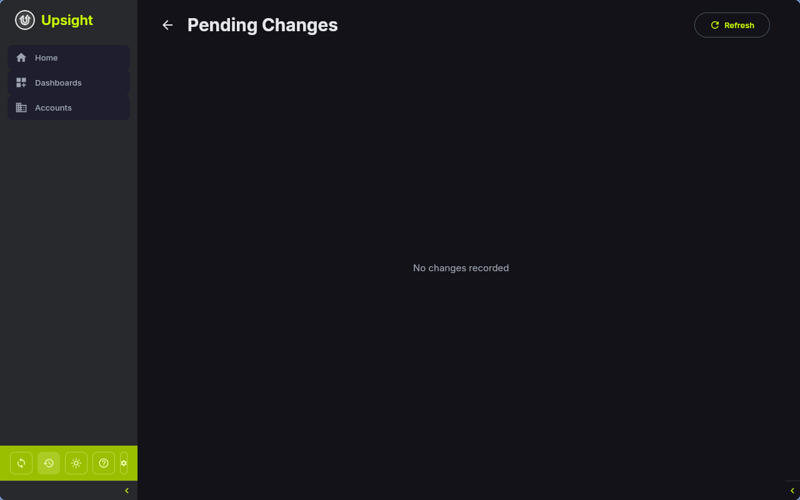

Salesforce Integration¶
Upsight integrates with Salesforce through the Salesforce CLI (sf). It reads account and opportunity data via SOQL queries and writes CX health updates back to Salesforce records.
Prerequisites¶
- Salesforce CLI installed (
sfcommand available on your PATH). Install from developer.salesforce.com. - Authenticated org -- run
sf org login weband complete the browser-based login flow.
Configuring in Settings¶
Go to Settings > Salesforce CLI. Upsight auto-detects the sf binary on your PATH. If it is installed elsewhere, select it from the dropdown or enter a custom path.
The settings panel shows the authentication status:
- Authenticated -- connected to an org, shows the username
- Not authenticated -- CLI found but no org connected
- Not found -- CLI binary not detected
Syncing Accounts¶
Full Sync¶
Click the Sync button in the sidebar to sync all accounts that have a Salesforce ID. This:
- Queries Salesforce for all accounts that already exist locally (by Salesforce ID)
- Updates Salesforce-sourced fields on each local account
- Auto-fills quick link URLs (cases, files, contracts) from the Salesforce ID
- Syncs all open and Closed Won opportunities for those accounts
Note
Full sync only updates accounts that already exist in Upsight. It does not discover new accounts. To add an account from Salesforce, use the New Account dialog on the Accounts screen.
Single Account Sync¶
On any account detail screen, open the Account Setup dialog and click Sync from Salesforce to refresh that individual account and its opportunities.
What Gets Pulled¶
The sync pulls a comprehensive set of fields from the Salesforce Account object:
| Category | Fields |
|---|---|
| Identity | Name, Industry, Segment, Account Executive |
| Financial | ACV, TCV, Contract Start Date, Renewal Date |
| Health | Customer Health, Calculated Health Score, Renewal Risk Level, NPS Score |
| CX Data | CXM Name, CXM Sentiment, CX Play, Last CX Update, Customer Stage |
| Engagement | Engagement Tier, CS Tier, Days Since Last CXM Activity, GEP Stage |
| Consumption | Overall Consumption %, Gateway API Calls, Gateway Services |
| Products | Products Contracted, Products Used, Kong Version |
| Health Indicators | All 10 indicator status and comment fields |
| Links | Internal/External Slack Channels, Account Plan, Success Plan, Google Drive |
From the Opportunity object:
| Fields |
|---|
| Name, Type, Stage, ACV, TCV, Close Date, Contract Start Date, Renewal Date, Renewal Risk Level, Churn Reason, CX Notes, CS Handoff Notes, ARR Churn Forecast |
Write-Back Fields¶
Certain fields can be edited locally in Upsight and pushed back to Salesforce. When you modify a write-back field, the change is:
- Saved to the local database immediately
- Logged in the change log with old and new values
- Pushed to Salesforce via the CLI (debounced -- multiple rapid edits are batched)
Account Fields¶
| Local Field | Salesforce API Name | Label |
|---|---|---|
| CXM Sentiment | CXM_Sentiment_Picklist__c |
CXM Sentiment |
| CSM Exec Summary | CS_Account_Notes__c |
CSM Exec Summary |
| CX Play | CX_Play__c |
CX Play |
| Last CX Update | Last_CX_Update__c |
Last CX Update |
| Relationship Health | Relationship_Health__c |
Relationship Health |
| Relationship Health Comments | Relationship_Health_Comments__c |
Relationship Health Comments |
| Customer Business Health | Customer_Business_Health__c |
Customer Business Health |
| Customer Business Health Notes | Customer_Business_Health_Comments__c |
Customer Business Health Notes |
| Consumption | Consumption__c |
Consumption |
| Consumption Comments | Consumption_Comments__c |
Consumption Comments |
| Enterprise Features | Enterprise_Features__c |
Enterprise Features |
| Enterprise Features Comments | Enterprise_Features_Comments__c |
Enterprise Features Comments |
| Kong OSS Present | Kong_OSS_Present__c |
Kong OSS Present |
| Kong OSS Present Comments | Kong_OSS_Present_Comments__c |
Kong OSS Present Comments |
| Critical Use Cases | Critical_Use_Cases__c |
Critical Use Cases |
| Critical Use Cases Comments | Critical_Use_cases_Comments__c |
Critical Use Cases Comments |
| Technical Engagement | Technical_Engagement__c |
Technical Engagement |
| Technical Engagement Comments | Technical_Engagement_Comments__c |
Technical Engagement Comments |
| Platform Play | Platform_Play__c |
Platform Play |
| Platform Play Comments | Platform_Play_Comments__c |
Platform Play Comments |
| Value Realization | Value_Realization_Custom__c |
Value Realization |
| Value Realization Comments | Value_Realization_Comments__c |
Value Realization Comments |
| Active Project | Active_Project_Implementation__c |
Active Project Implementation |
| Active Project Comments | Active_Project_Implementation_Comments__c |
Active Project Comments |
Opportunity Fields¶
| Local Field | Salesforce API Name | Label |
|---|---|---|
| CX Notes | CX_Notes__c |
CX Notes |
| CS Handoff Notes | CS_Handoff_Notes__c |
CS Handoff Notes |
Sync Log¶
Navigate to Sync Log (accessible from the sidebar sync area) to see the write-back history.

Each entry shows:
- The account and field that was changed
- Old and new values
- Status: pending, pushed, failed, or reverted
- Timestamp
For failed changes, you can:
- Retry -- attempt to push the change to Salesforce again
- Revert -- push the old value back to Salesforce
Conflict Resolution¶
When syncing, Upsight protects locally pending changes from being overwritten:
- If a field has a pending or failed write-back entry in the change log, the sync preserves the local value instead of overwriting it with the Salesforce value
- Once the write-back is successfully pushed or reverted, subsequent syncs will pull the Salesforce value normally
This means you can safely sync while you have unsaved edits -- your local changes take priority until they are resolved.